Social Queues
Simplified complex enterprise social publishing across thousands of locations.
Overview
About Reputation
Reputation is a SaaS platform that helps businesses manage customer experience and online reputation by centralizing reviews, surveys, sentiment analysis, social engagement, and operational workflows.
About Social Queues
Social Queues was an internal workflow within Managed Actions, used by Reputation’s Managed Services team to manage social content on behalf of customers.
While the underlying infrastructure already leveraged Nuvi’s social technology, the Social Queues experience had not evolved with it. The workflow and UI relied on legacy patterns and internal processes, creating friction for Managed Services teams.
The project focused on modernizing the workflow and redesigning the UI to better align with Managed Actions and Nuvi, improve day-to-day efficiency, and create a more scalable foundation for supporting customers.
Users
Social Queues was primarily used by Managed Services teams who managed social content for multiple customers and locations. Their work was highly recurring, requiring them to create, review, approve, and publish content on weekly or monthly schedules while tracking location-specific requirements.
Workarounds
Due to limitations in Social Queues, some specialists used Social Campaigns to bulk-create and publish content through Nuvi’s newer technology, forcing them to split their workflow across multiple areas of the product.
Problems
Social Queues had become outdated, difficult to navigate, and disconnected from how Managed Services teams worked. While the underlying social technology was already powered by Nuvi, the workflow and UI hadn’t evolved to leverage its capabilities.
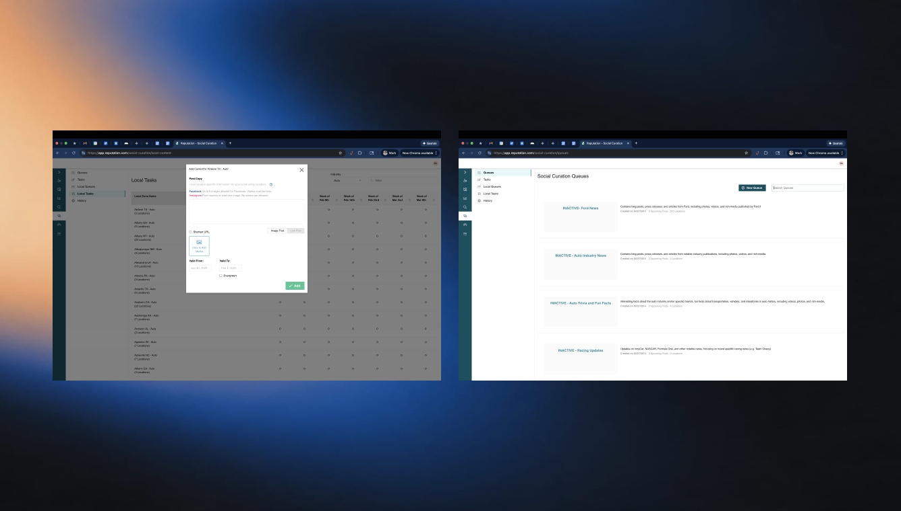
Fragmented Workflow
Creation, review, approval, and publishing lacked clear stages, forcing teams to rely on workarounds and even move outside the platform for some instances.
Inefficient Approvals
Customer review and approval workflows were cumbersome, with limited support for submitter/approver roles and no streamlined way to manage rejections or revisions.
Limited Content Controls
Users lacked important tools for managing content at scale, including post previews, shared media libraries, albums, and location-based customization.
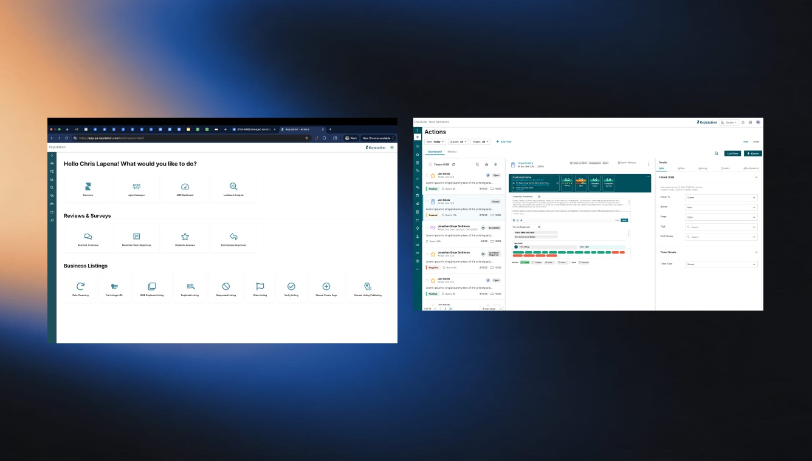
Inconsistent Experience
Social Queues didn't follow the familiar patterns used across Nuvi social, Actions and Managed Actions, making navigation and task management less intuitive for teams already working within those systems.
These workflow inefficiencies made it harder for Managed Services teams to manage growing volumes of customers, locations, and recurring social programs. Improving operational efficiency created an opportunity to support more customer programs and increase revenue capacity.
Modernize Social Queues by adapting the existing implementation to better surface Nuvi's capabilities, align with Managed Actions, and create a more efficient, scalable workflow for Managed Services.
Research Insights
Working directly with Managed Services helped validate the workflow and uncover needs beyond the original requirements.
Key Learnings
→ Users preferred configuring a queue and assigning locations at the same time, reducing back-and-forth and making setup faster. Product wanted it like B.
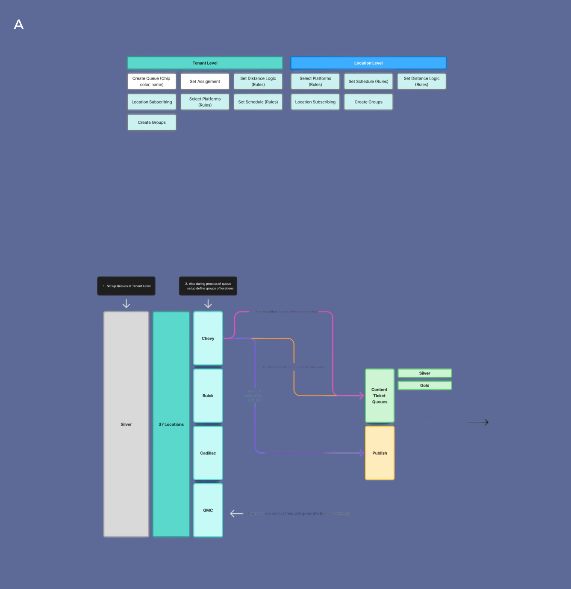
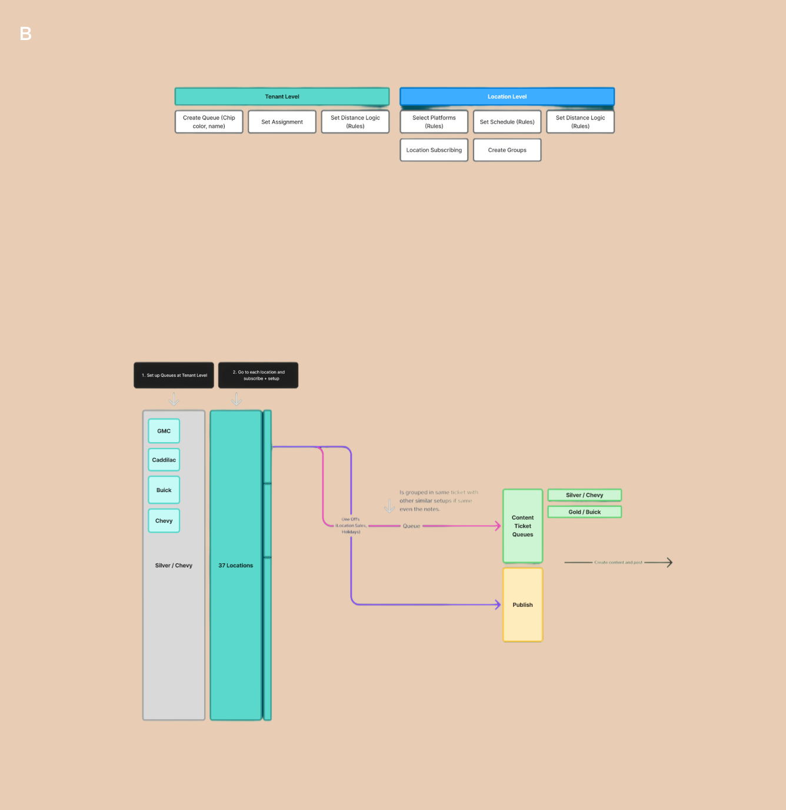
→ Failed and “Action Required” posts were a regular part of the workflow, requiring support for retries, troubleshooting, manual publishing, and closing failed posts.
→ Teams needed flexibility to support different requirements within the same queue, reducing unnecessary configurations while accommodating complex customer programs.
→ The initial structure split queue setup, creation, and published content into standalone pages. We instead integrated them into existing Managed Services and Nuvi workflows, reducing fragmentation and unnecessary product surface area.
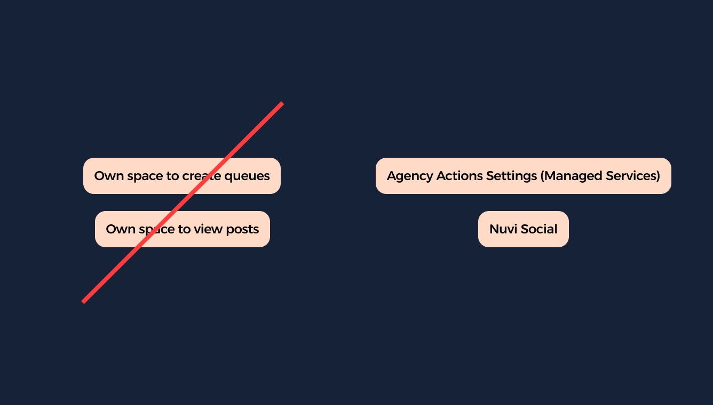
The research established three principles: make setup faster, design for real operational workflows, and provide flexibility at scale.
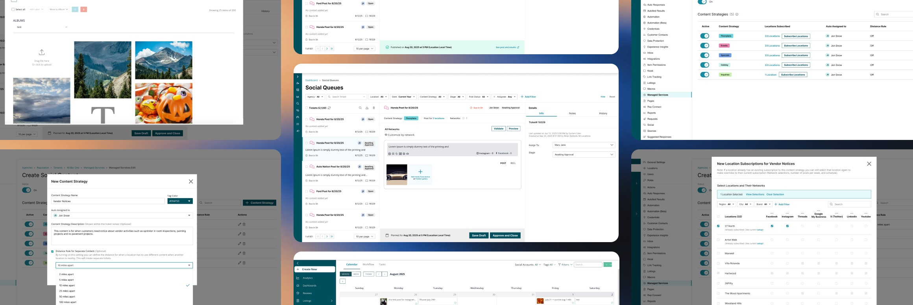
Solutions
We redesigned Social Queues around familiar Managed Services workflows while adapting the existing implementation to better leverage Nuvi’s capabilities.
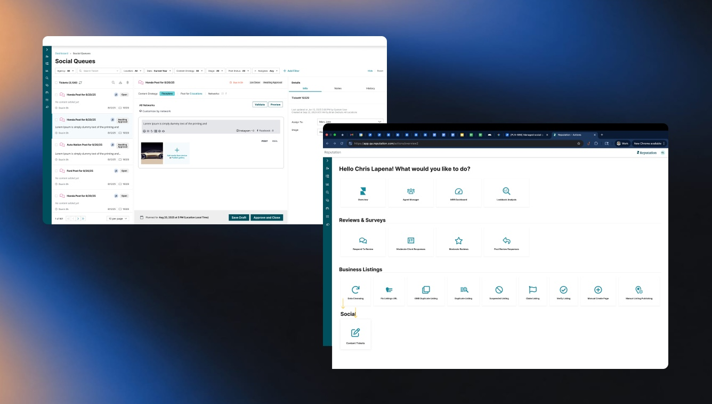
Familiar Workflow
Introduced the three-panel layout used across Actions and typical Managed Actions setup for consistent navigation that met users in a consistent place. Added structured ticketing and staging for clearer ownership and content status.
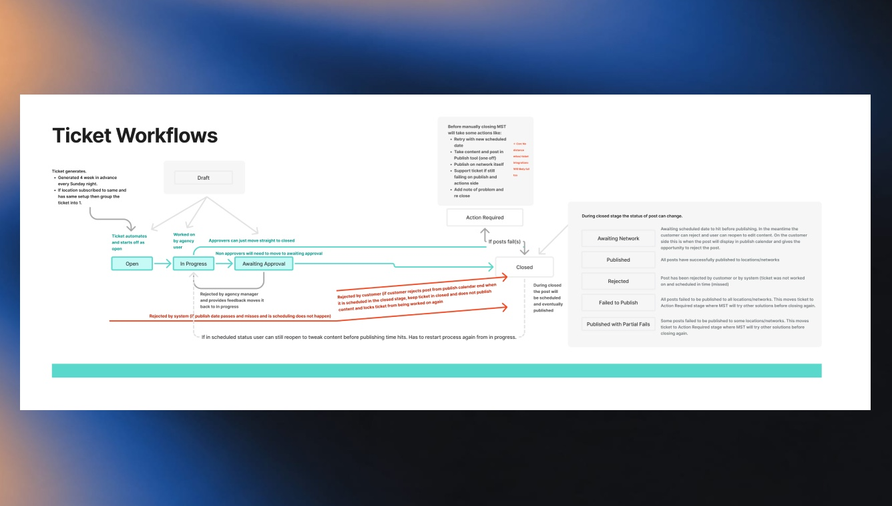
Streamlined Approvals
Connected Social Queues to Nuvi’s publishing experience, allowing customers to review, approve, or reject directly through the social calendar.
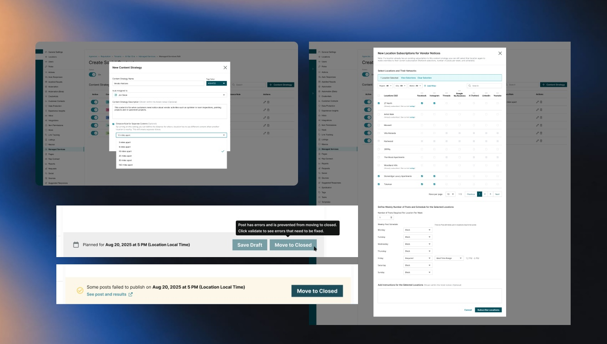
Built for Real-World Scenarios
Added clearer states and actions for failed posts, retries, and troubleshooting. Supported location-aware content variations without requiring unnecessary queues.
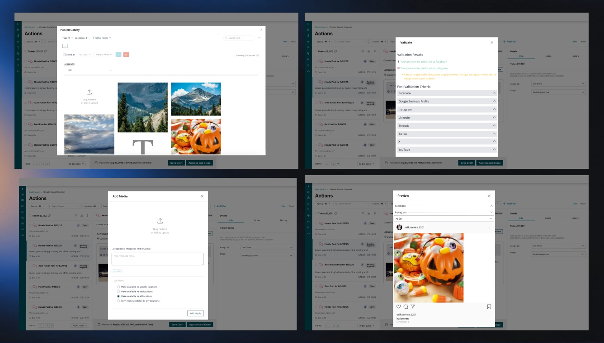
Leverage, Don’t Rebuild
Adapted the existing Nuvi technology and codebase rather than rebuilding social functionality, creating a more cohesive and scalable Managed Services experience.
Retrospective
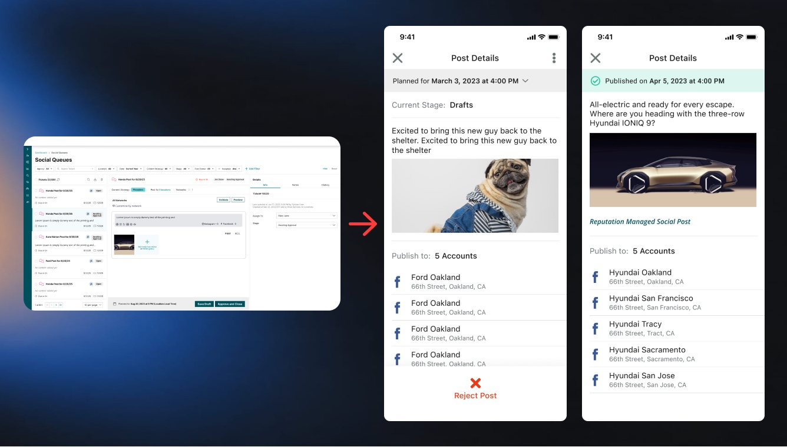
The redesign helped mitigate a key customer churn risk while creating a more scalable workflow for Managed Services. By reducing operational friction, enabling mobile workflows, and better leveraging Nuvi’s existing social capabilities, the team could support more customers and locations without a proportional increase in effort—creating greater capacity for additional programs and revenue.
This project reinforced the importance of designing with existing technology, not around it. Close collaboration with Engineering and Managed Services required balancing user needs, technical constraints, and workflow efficiency through continuous iteration.
One key Phase 2 opportunity that I would like to add would be introducing a “Make a Suggestion” option when reviewing social content. Rather than forcing clients to either approve or reject a post, this would give them a way to request changes and create a more collaborative review process.
Rather than building something entirely new, the opportunity was to unlock more value from capabilities that already existed by organizing them into a workflow that better served the people using them.